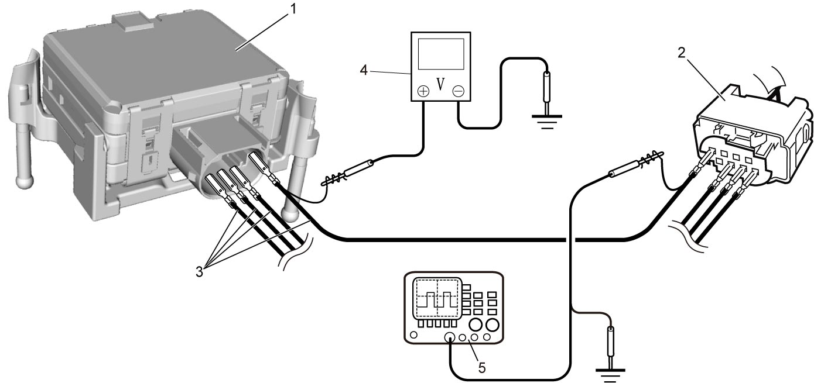

10J
| Precautions for Diagnosing Trouble |
•Diagnose Radar Brake Support (RBS) system according to the procedure in RBS System Check.
•Check that component parts related to the vehicle posture such as tires, suspension, etc. are standard parts.
•Check that millimeter wave radar cover and radiator grill are standard parts and well installed.
•Check that millimeter wave radar is installed in the original position.
•Check that millimeter wave radar cover is in the following conditions.

•Check that component parts related to the vehicle posture such as tires, suspension, etc. are standard parts.
•Check that millimeter wave radar cover and radiator grill are standard parts and well installed.
•Check that millimeter wave radar is installed in the original position.
•Check that millimeter wave radar cover is in the following conditions.
—Sticker, film, etc. are not affixed or paint is not adhered.
—There is no abrasion or adhesion of dirt, etc. on the surface.
•When checking RBS control module (1) for terminal voltage or waveform, connect service wires (3) between the control module and connector (2).—There is no abrasion or adhesion of dirt, etc. on the surface.

 "Expand image")
| 4. | Voltmeter | 5. | Oscilloscope |